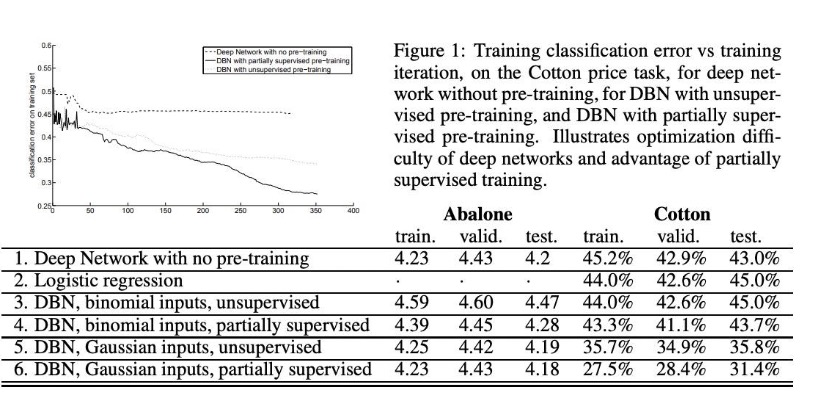
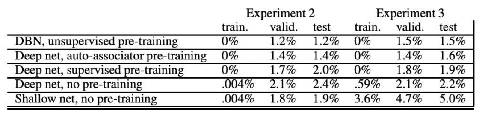

Greedy Layer-Wise Training of Deep Networks
Annotated by: Noah Schliesman
Published on:
Abstract
The authors begin by stating the success of deep multi-layer neural networks above shallower architectures, but note that such networks often get stuck in poor local minima. They explore Hinton’s greedy layer-wise unsupervised learning algorithm for Deep Belief Networks (DBNs), explore variants, and analyze the method's success. Lastly, they note that such a greedy layer-wise strategy helps optimization by initializing weights near better solutions (therefore bringing better generalization).
Introduction
Kernel-based methods like Support Vector Machines (SVMs) and graph-based manifolds are limited by their degrading performance given diverse data. Even with a soft margin, which utilizes slack variables, such models are often unable to capture the intricate and complex relationships between multi-faceted data. I’ve written a piece about Support Vector Networks, of which I describe the basics of such Kernel methods and their extension to form support vectors (please check it out if you’re interested). For a sufficiently large distance between data points \( x \) and variance \( \sigma^2 \), consider the following form of the Radial Basis Function,
\[ K(x, y) = \exp \left( -\frac{||x-y||^2}{2\sigma^2} \right) \]
As the Euclidean distance between points increases due to the complexity of data, the kernel converges to zero. While alternatives like adjusting the variance and choosing a linear/polynomial kernel can alleviate this issue, it is still inherently limited by the complexity of data, which in turn can require an extreme number of support vectors.
As dimensionality increases, data points become increasingly sparse (which in turn makes it more difficult to define a decision boundary). Methods under such dimensionalities suffer from an exponential growth of the search space and risk overfitting. Defining a hyperplane with high dimensional data further increases the number of dimensions in the transformed space, leading to an exponentially difficult computational cost.
The authors continue by comparing shallow architectures like kernel machines, of which have two levels of data-dependent computational elements. They note the benefits of a deep architecture in terms of the time complexity of the parity function—even number of inputs yields 0 and odd number of inputs yields 1. For \( d \) inputs, the examples and parameters required are,
- \( O(2^d) \): Gaussian Support Vector Machine (SVM)
- \( O(d^2) \): Single hidden-layer neural network
- \( O(d) \): Neural network with \( O(\log_2 d) \) layers
- \( O(1) \): Recurrent Neural Network (RNN)
Consider a Boolean function that computes the multiplication of two numbers from their binary (\( d \)-bit) representation. When expressed as a shallow architecture, such a task may require \( O(2^d) \) elements. However, deeper architectures can be more efficient for a sufficiently large \( d \), expressed by a neural network with \( O(\log_2 d) \) layers and \( O(d) \) elements per layer.
The computational superiority of deep networks is now clear to the reader. Such deep networks suffer from gradient-based optimization starting from random initializations, leading to convergence to poor extrema. The Deep Belief Network (DBN) aids this problem, as upper layers represent more abstract concepts and lower layers extract low-level features. By performing unsupervised layer-wise greedy pretraining on such a network (i.e. train layers one at a time) and then fine-tuning the whole network, superior performance is achieved.
The authors note their extension of Restricted Boltzmann Machines (RBM) to continuous values and their application of this greedy layer-wise unsupervised pretraining to autoencoders. I’ve also covered this in my write-up about autoencoders, where the authors show superior performance to PCA in image reconstruction. Please check it out if you’re interested in a stark application of such a greedy layer-wise unsupervised pretraining method.
Overview of Deep Belief Nets
A Deep Belief Network (DBN) consists of multiple hidden layers, which learn hierarchical representations of data by stacking multiple layers of Restricted Boltzmann Machines (RBMs). Each layer learns to model the correlations among units in the previous layer.
Recall that a RBM consists of a visible layer that corresponds to input features and a hidden layer that captures the representations of the input data. The RBM assigns an energy to every possible configuration of visible and hidden units. Given a visible unit bias \( b_i \), hidden layer bias \( c_j \), and weight \( W_{ij} \) connecting the visible and hidden unit, the energy is defined as:
\[ E(v, h) = - \sum_i b_i v_i - \sum_j c_j h_j - \sum_{i,j} v_i W_{ij} h_j \]
We care about the joint distribution \( P(v, h) \) because it represents how visible data and hidden data co-occur. Consider a partition function \( Z \), which ensures the sum of all probabilities is 1:
\[ Z = \sum_{v,h} e^{-E(v,h)} \]
Non-Intractable Partition Function RBM Analysis
The number of possible configurations to compute such a partition function is intractable. To approximate the distribution of the partition function, we often need to use a sampling method like Contrastive Divergence (CD-k). This method will be described soon with Gibbs Markov Chains. With this caveat, we can continue this analysis with the assumption that \( Z \) is not intractable and can be computed reasonably. Take note that this assumption is not true and is only for the sake of intuition. The joint distribution is then given by:
\[ P(v, h) = \frac{1}{Z} e^{-E(v,h)} \]
After obtaining the joint distribution \( P(v, h) \), the marginal distribution can be derived:
\[ P(h) = \sum_v P(v, h) = \sum_v \frac{1}{Z} e^{-E(v,h)} = \frac{1}{Z} \sum_v e^{-E(v,h)} \]
From here, a hidden unit \( h_k \) can be sampled from the distribution by first computing for each configuration and then calculating the cumulative probabilities based on \( P(h) \):
\[ C(h_k) = \sum_{i \leq k} P(h_i) \]
Draw a uniform number \( u \in [0, 1] \). The sampling of hidden unit \( h_k \) is determined in the configuration that:
\[ C(h_{k-1}) \leq u < C(h_k) \]
After obtaining the sampled hidden configuration \( h_k \), visible data is generated by sampling the conditional distribution \( P(v|h_k) \). Given the sigmoid function \( \sigma \), this distribution is modeled by:
\[ P(v_i = 1|h_k) = \sigma \left(b_i + \sum_j W_{ij} h_j \right) \]
Again, draw a uniform number \( r \in [0, 1] \). If \( P(v_i = 1|h_k) > r \), set \( v_i \) to 1 (otherwise set to 0).
From here, we can simply reconstruct the hidden unit \( h_j \) given the sampled hidden unit in the same way above. This process allows the RBM to generate new visible units that are consistent with the learned structure of the input data. Again, this all hinges on the case that \( Z \) is not intractable. Let’s consider the general (and more useful) case that \( Z \) is intractable.
Intractable Partition Function RBM Analysis via CD-k
Contrastive Divergence is an approximation method that allows for the training of RBMs efficiently, based on the idea of sampling from a Markov Chain. Take note that a Markov Chain is a probabilistic process at time \( t \), the state only depends on time \( t-1 \). This chain states together with a certain probability distribution that depends on the current state. CD-k utilizes Gibbs Sampling, which entails alternating between sampling hidden units given visible units and then sampling visible units given hidden units. Each step transitions the Markov Chain from one state to another in the visible and hidden unit space. CD-k can be described then as a truncated Markov Chain Monte Carlo (MCMC) method.
Given an initial visible vector \( v \), we can compute the conditional probability of hidden unit activation given visible units \( v \),
\[ P(h_j = 1|v) = \sigma \left(c_j + \sum_i W_{ij} v_i \right) \]
After drawing a uniform number \( a \in [0, 1] \), If \( P(h_j = 1|v) > a \), set \( h_j \) to 1 (otherwise set to 0).
After sampling over all hidden units \( h_j \), we’re interested in the reconstructing the visible units \( v_i \) using conditional probability of visible unit activation given hidden units \( h \),
\[ P(v_i' = 1|h) = \sigma \left(b_i + \sum_j W_{ij} h_j \right) \]
Again, draw a uniform number \( b \in [0, 1] \). If \( P(v_i' = 1|h) > b \), set \( v_i' \) to 1 (otherwise set to 0).
Using these reconstructed visible units \( v_i' \), we can resample the new hidden units \( h_j' \),
\[ P(h_j' = 1|v') = \sigma \left(c_j + \sum_i W_{ij} v_i' \right) \]
Draw a uniform number \( c \in [0, 1] \). If \( P(h_j' = 1|v') > c \), set \( h_j' \) to 1 (otherwise set to 0). This process efficiently extracts the relationship between hidden units and visible units without direct computation of the partition function \( Z \), yielding accurate activations for the reconstructed hidden units \( h_j' \). This is known as CD-1. To improve hidden unit approximation, it can help to repeat this reconstruction process \( k \) times (i.e. CD-k).
Deep Belief Networks (DBNs)
Take note that this process is what goes on behind the scenes in each layer of a Deep Belief Network to capture a latent representation of each layer input by accurately reconstructing the activations. Let’s broaden the scope and consider DBN’s at a network-level abstraction rather than a layer-wise abstraction. Let,
- \( x \) be the input data,
- \( g_i \) be the hidden variables at layer \( i \),
- \( l \) be the total number of DBN layers.
The joint distribution of the observed data \( x \) and hidden variables at all layers is given as a decomposition of joint distributions,
\[ P(x, g_1, g_2, ..., g_l) = P(x|g_1)P(g_1|g_2)... P(g_{l-2}|g_{l-1})P(g_{l-1}, g_l) \]
The core idea behind DBNs is that the condition distributions can be factorized. This in turn allows for the following layerwise relationship,
\[ p(g_i|g_{i+1}) = \prod_{j=1}^{n_i} P(g_j|g_{i+1}) \]
\[ P(g_j = 1|g_{i+1}) = \sigma \left(b_j + \sum_{k=1}^{n_{i+1}} W_{kj} g_k \right) \]
As you can see, this process is robustly modeled by CD-k and forms the basis for the greedy layer-wise pretraining method shown above.
Training RBMs
Often, the goal is to maximize the log-likelihood of the observed data under the RBM model. Consider the log-likelihood of a data point \( v_0 \) under the RBM model,
\[ \log P(v_0) = \log \sum_h e^{-E(v_0, h)} - \log \sum_{v,h} e^{-E(v_k, h)} \]
Here, the first term is a result of the positive phase (i.e. consider possible hidden states given a visible vector), and the second term comes from the negative phase (i.e. consider all visible and hidden configurations). We are interested to see how such a log-likelihood changes with respect to the model parameters,
\[ \frac{\partial \log P(v_0)}{\partial \Theta} = \frac{\partial \log \sum_h e^{-E(v_0, h)}}{\partial \Theta} - \frac{\partial \log \sum_{v,h} e^{-E(v_k, h)}}{\partial \Theta} \]
This can be expanded using the chain rule,
\[ \frac{\partial \log P(v_0)}{\partial \Theta} = \frac{1}{\sum_h e^{-E(v_0, h)}} \cdot \frac{\partial \sum_h e^{-E(v_0, h)}}{\partial \Theta} - \frac{1}{\sum_{v,h} e^{-E(v_k, h)}} \cdot \frac{\partial \sum_{v,h} e^{-E(v_k, h)}}{\partial \Theta} \]
Differentiation entails that the summations can be moved outside each term,
\[ \frac{\partial \log P(v_0)}{\partial \Theta} = \frac{1}{\sum_h e^{-E(v_0, h)}} \cdot \sum_h \frac{\partial e^{-E(v_0, h)}}{\partial \Theta} - \frac{1}{\sum_{v,h} e^{-E(v_k, h)}} \cdot \sum_{v,h} \frac{\partial e^{-E(v_k, h)}}{\partial \Theta} \]
We can now apply the chain rule to the exponential term \( e^{-E(v,h)} \),
\[ \frac{\partial \log P(v_0)}{\partial \Theta} = -\sum_h \frac{e^{-E(v_0, h)}}{\sum_h e^{-E(v_0, h)}} \cdot \frac{\partial E(v_0, h)}{\partial \Theta} + \sum_{v,h} \frac{e^{-E(v_k, h)}}{\sum_{v,h} e^{-E(v_k, h)}} \cdot \frac{\partial E(v_k, h)}{\partial \Theta} \]
This yields the simpler, more intuitive gradient equation,
\[ \frac{\partial \log P(v_0)}{\partial \Theta} = -\sum_h Q(h|v_0) \cdot \frac{\partial E(v_0, h)}{\partial \Theta} + \sum_{v,h} P(v, h) \cdot \frac{\partial E(v_k, h)}{\partial \Theta} \]
As mentioned above, we can use CD-k to sample the hidden units given the visible vector using the expected value of the conditional probability,
\[ Q(h|v_0) = - \mathbb{E}_{h_0 \sim P(h|v_0)} \]
After finding the expected value of the sampled hidden units given the visible vector, we calculate the gradient contribution,
\[ \frac{\partial E(v_0, h)}{\partial \Theta} \]
Similarly in the negative phase, run Gibbs sampling for \( k \) steps to generate the expected value of the joint probability of visible and hidden configurations,
\[ P(v, h) = - \mathbb{E}_{(v_k, h_k) \sim P(v,h)} \]
In turn, calculate the gradient contribution for the given sample \( (v_k, h_k) \),
\[ \frac{\partial E(v_k, h_k)}{\partial \Theta}
Thus, the gradient update can be described as,
\[ \frac{\partial \log P(v_0)}{\partial \Theta} = -\frac{\partial E(v_0, h_0)}{\partial \Theta} + \mathbb{E}_{h_k} \frac{\partial E(v_k, h_k)}{\partial \Theta} |v_k \]
The first term pulls the model to better fit the data given the forward phase and the second term pushes it away from its reconstructions, maintaining a balance.
After training the RBM for the first layer, a DBN is constructed by stacking RBM’s one layer at a time. This method is equivalent to a variational bound, which optimizes the likelihood of the data given the model. By using this greedy strategy, each new layer is based on previously trained layers, improving accuracy and generalization.
After the unsupervised greedy layer-wise pretraining as discussed above, the entire network can be fine-tuned using supervised learning techniques. By adjusting the parameters of all layers simultaneously, the model can attain better extrema. There have been several proposals for such an algorithm for fine-tuning.
Hinton et al. (2006) reference the wake-sleep algorithm in which the network generates data from the hidden layers to the visible layers in the wake phase (thereby adjusting the generative weights) and then generates data from the visible layers back to the hidden layers (thereby adjusting the recognition weights).
Similarly, Hinton et al. (2006) also suggest using a mean-field approximation for the posterior distributions by replacing the samples of hidden units with their bit-wise mean-field expected values. Instead of sampling the hidden units, bit-wise expected values allows for deterministic estimates of the hidden unit activations,
\[ \mu_j = P(h_j = 1|v) = \sigma \left(b_j + \sum_i W_{ij} v_i \right) \]
Here, interactions between variables are approximated by assuming that each variable acts independently, influenced only by the average effect of other variables. This assumption can cause a loss of expressiveness, approximation errors, and learning biases given complex models. Still, it is often used because it makes DBN training computationally feasible and it is often the case where such an independent assumption is good enough.
The network can further be optimized using gradient descent with respect to a supervised training criterion (i.e. minimize reconstruction error or optimizing classification). The authors mention using a larger learning rate during the supervised fine-tuning phase and refer to the DBNSupervisedFineTuning algorithm.
Extension to Continuous-Valued Inputs
Continuous inputs are scaled to the range (0, 1). The authors note that only the energy function \( a(z) = b + w^T z \), weights \( w \), and hidden units \( z \) are changed. Consider a linear energy function with bias \( b \), weights \( w \), and hidden units \( z \),
\[ a(z) = b + w^T z \]
The authors model the conditional density of the input given hidden units using an exponential distribution,
\[ p(y|z) = \frac{\exp(ya(z))}{\int_{y \in I} \exp(ya(z)) dv} \]
When \( I \) is a closed interval \( (0, 1) \), the conditional density becomes a truncated exponential. In this case, the average value of the input weighted by its probability distribution becomes,
\[ \mathbb{E}[y|z] = \frac{1}{1 - \exp(-a(z))} \cdot \frac{1 - \exp(-a(z)) - 1}{a(z)} \]
The authors describe sampling from a truncated exponential distribution via inverse transform sampling for a random uniformly-distributed, scaled variable \( U \in [0, 1] \),
\[ F^{-1}(U) = \frac{\log \left(1 - U \times \left(1 - \exp(a(z)) \right)\right)}{a(z)} \]
The inverse CDF maps the uniform random variable to the corresponding value in the truncated exponential distribution. The logarithm comes from inverting the exponential form of the exponential CDF. The inner term represents the CDF at the truncation boundary \( y = 1 \). The transformation is scaled by the inverse of the energy function to account for the shape and scale of the exponential distribution.
Now, consider adding quadratic terms of the form \( \sum_i d_i^2 y_i^2 \) to the energy function to induce Gaussian-distributed units. This can be proved by comparing this energy function to the PDF for a Gaussian, and completing the square (which is a bit beyond the scope of this paper). This results in a diagonal covariance matrix between units in the same layer, entailing that the Gaussian units are independent of one another and therefore have their own variance \( d_i^{-2} \). For a unit with inputs \( y \), \( z \), the conditional mean is,
\[ \mathbb{E}[y|z] = \frac{a(z)}{2d^2} = \frac{b+w^Tz}{2d^2} \]
As done before, CD-k can be performed given such added quadratic terms. To step aside, the gradient of the energy function provides insight into the parameter energy distribution, which in turn determines the mean and variance. Since such a direct computation is often intractable, CD-k can approximate quadratic influence.
Intuitively, continuous-valued hidden units give the model more flexibility to handle continuous-valued input data. However, Gaussians suffer from the fact that mean-field propagation results in a purely linear transformation (i.e. \( a(z) \) is a linear function of \( z \)).
As an aside, several years after this paper’s inception, batch normalization and layer normalization were developed as a way to regularize the statistical properties of layer inputs and relieve the need to rely on Gaussian units.
The authors test these nets on the UCI Abalone dataset, which contains 2,177 training examples, 1k validation examples, and 1k test examples. Such a dataset contains features related to a type of mollusk with the goal to predict the age.
They also tested using a financial dataset of real-valued input variables that represent the averages of returns and squared returns to predict the next month’s return of a Cotton futures contract. There are 13 continuous input features, which are averages of returns over different time windows (up to 504 days). It contains 3,135 training examples, 1k validation examples, and 1k test examples. Such a dataset is more suited to Gaussian units than binomials.

Overall, Gaussian inputs had superior performance compared to their binomial, DNN, and regression counterparts.
Understanding Why the Layer-wise Strategy Works
The authors note that unsupervised layerwise pretraining helps mitigate local extrema convergence by better initializing the weights of all layers. They verify this principle through that of an autoencoder. For each bit in the input vector given weight matrix \( W \), hidden biases \( b \), and input biases \( c \), the reconstruction probability is given as,
\[ p(x) = \sigma \left(W \cdot \sigma(W'x + b) + c \right) \]
The unsupervised training criterion for the layer is based on minimizing the reconstruction cross-entropy,
\[ R = -\sum_i x_i \log p_i(x) + (1 - x_i) \log (1 - p_i(x)) \]
It’s crucial that each layer avoids mapping the identity function, where inputs are directly mapped to hidden units without learning a compressed representation of the data. Weight decay and SGD induces noise and encourages meaningful transformation.
Such an autoencoder was trained on the MNIST digit classification task using a DBN, a DNN with autoencoder pretraining, a DNN with supervised greedy layerwise pretraining, a DNN with random initialization, and a shallow network with no pretraining. After pretraining (or random initialization), a logistic regression layer is added on top of the network for classification. The entire net is then fine tuned via SGD with cross-entropy loss.
The networks contained 784 input units (28x28 pixel images), 10 outputs (0-9 digits), 3 hidden layers, and a variable number of hidden units (500-1000). In the case of the shallow network, there is only one hidden layer. An L2 weight decay regularization term is applied to all models.

While the DBN was slower to train, it had the potential to attain very low error rates. The results show that unsupervised pretraining results in a better convergence, further proving the author’s hypothesis that pretraining better initializes weights.
The authors note that networks without pretraining still performed well on the training set, which seems to contradict this hypothesis. The authors state that without pretraining, the lower layer might still be initialized poorly, but the top two layers of the network could learn to fit the training set almost perfectly (as they form a shallow but wide architecture). When pretraining is used, these layers receive a better representation which supports generalization.
To test these ideas, the authors constrained the size of the top hidden layer to be small (only 20 hidden layers). With this modification, networks without pre-training performed poorly because the network couldn’t compensate from lower layers with a large final layer (confirming the second hypothesis). The authors propose training all layers simultaneously, but still pretraining each layer to model its input.
Dealing with Uncooperative Input Distributions
In cases where the structure of the input distribution does not naturally contain significant information about the target variable, i.e. regression, traditional pretraining methods may not be effective. To handle these “uncooperative distributions”, the authors propose a mixed training criterion that updates using a mixture of CD-k / reconstruction error gradient and a supervised prediction error. Thus, a partially supervised greedy training approach is fit for distributions that are more nuanced with respect to the target variable.
Conclusions
Motivated by the need for deep architecture training algorithms, the authors extend RBMs and DBNs to handle continuous-valued inputs, investigate the benefits of greedy unsupervised layerwise training, and provide a comparison to autoencoders. Such a way of pretraining is incredibly useful and mitigates poor weight initialization, which leads to convergence to bad extrema.
Citations
- [1] Bengio, Y., Delalleau, O., & Le Roux, N. (2006). The curse of highly variable functions for local kernel machines. In Y. Weiss, B. Schölkopf, & J. Platt (Eds.), Advances in Neural Information Processing Systems 18 (pp. 107–114). MIT Press.
- [2] Buhmann, M. D. (2003). Radial basis functions: theory and implementations. Cambridge University Press.
- [3] Hinton, G. E. (2002). Training products of experts by minimizing contrastive divergence. Neural Computation, 14(8), 1771-1800. https://doi.org/10.1162/089976602760128018